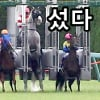

스타트 실패를 했음에도 결국 모든 말을 추월해 압도적인 마무리.
그냥 빠른 말이라면 많지만, 사람을 미치게 만드는 말은 드물다.
상식을 벗어난 기상천외한 달리기로 사람을 미치게 만드는 스타 호스, 골드쉽.
천성 때문에 부진이 많았지만, 이 달리기로 팬들을 몇번이고 열광하게 만들었다.
스타트 실패를 했음에도 결국 모든 말을 추월해 압도적인 마무리.
그냥 빠른 말이라면 많지만, 사람을 미치게 만드는 말은 드물다.
상식을 벗어난 기상천외한 달리기로 사람을 미치게 만드는 스타 호스, 골드쉽.
천성 때문에 부진이 많았지만, 이 달리기로 팬들을 몇번이고 열광하게 만들었다.
유명한 지랄마임에도 도축 안당한 이유
마주가 존나 애낌
골드쉽은 괴짜 정도지 지랄마 축에도 못 낌... 게다가 지랄하느냐 마느냐는 도축 사유가 아님. 성적이 문제지. 골드 쉽이 훨씬 지랄맞았어도 G1 6승이나 한 말을 누가 도축함
1번 교배료가 300~500만엔인데 1년에 100억씩 벌어오는 말을 누가 도축함?
근데 마지막 보면 똥꼬에 빨간거 머임?
아날 비즈 ㄴㄴ
우리말 지랄마에요 란 뜻
뒤로 오면 뒷발로 찹니다 그니까 조심하세요 라는 뜻
아쉽다
크리스마스 이브라 루돌프 빨강코 코스프레한거임
으흐흐
이 새끼 기행이 ㅈㄴ 심해서 그렇지 한번을 이기기도 힘든 G1을 6승이나 해버린미친 명마임
추입마가 진짜 사람 미치게 만들지
골 통과하고 기수가 골드쉽 때리는거 ㅋㅋㅋㅋ
“아오 이 미친놈앜ㅋㅋㅋㅋ”

야동을 하도 봐서
이라마 로 봤네..
이영상에서 점점 우마무스메가 늘어난다
혼자 백마여서 더더욱 돋보이네
왜 자막은 룰러십이여
골드쉽보다 룰러쉽이 스타트를 더 조져서...
늦출 조진건 루라찌고 저때는 늦출 적던 3세 골드 선생님임 글쓴이가 늦출을 강조할거면 15 타카라즈카를 갖고오는게 적절했음
이후에 4세 5세 거치면서 지랄이 심해지는 쉽새끼로 각성함
추입이 존나 도파민터져....
고루도 시뿌 쯔요오이
말이 저기가 결승선이라는걸 어떻게알지 ㅎㅎ 걍 냅다 달릴거같은데 흰말은 전략적으로 경기하네
기수는 장식이 아니에요
성체 말(2살 이상) 지능이 사람의 약 3세~4세(또는 6세) 정도 수준이고 IQ도 70이상인거같다고 함
말도 다 암. 기수의 작전도 수행하고 기수 작전이 맘에 안들면 지 생각대로 달리기도 함.
어떤 말들은 마사 분위기를 읽어서 '아, 나 좀 있으면 경기구나' 하면 다이어트도 한다고 함. 심지어 은퇴 개념도 아는 말도 있다고.
스타트는 약점이었다고 하는데, 저 덩치로 본문 장거리 경기에서도 거리에서 불리한 외곽으로 다 재껴버리는 미친 스태미너
외곽으로 돌면 머니까 잘 안가서 외곽쪽 바닥이 멀쩡했다고는 해도....
괜히 은퇴할 때까지 전력 다 쓴 경기가 없다는 추측이 나오는게 아닌 말인듯
도파민 개쩌네ㅋㅋ
추입마 추월하는거 실관해보니까 박력 지리더라
추입이 사람 미치게 만들어.
겜에서 봐도 그정돈데 실제로보면 어마어마할듯...
골드쉽, 일본의 경주마. 멋있는 외모에 피지컬 쩔고 일본 경마 최상위리그라고 할 수 있는 G1에서 6승을 기록하는 등 뛰어난 실력을 자랑하나 또라이 성격으로 유명하다. 생긴 모습은 딱 '백마탄 왕자님' 에 나오는 백마 모습이나 기분파에 스포트라이트 받는 것을 좋아하고 보스기질까지 가지고 있어서 무리 서열따위는 안중에도 없으며 아무 말 한테나 시비를 걸고 특히 맘에 안드는 말이 나오면 바로 달려드는 개차반 성격을 가지고 있다.
스테미너가 뛰어나고 후반 가속이 좋아서 초반에 뛰어나가거나 후반에 스퍼트로 뒤집는 스타일이 아니라 중후반부터 쭉~~~ 달려서 앞으로 달려나가는 스타일이다. 달리는 스타일이 잘 맞았던 한신 경마장에서의 성적이 정말 좋았다. 몸도 튼튼해서 이렇다 할 부상도 없었다. 2012년 제72회 사츠키상은 꼴지부터 1등까지 다 해먹는 어마어마한 대역전승으로 골드쉽을 대표하는 경기이다. 다만 위에 언급했듯 자잘한 사고도 많이 치는 기행도 많이 벌였는데 특히 2015년 출발하기 전 게이트에서 발광하다가 1초 늦게 출발해 버려서 120억의 마권을 휴지조각으로 날려버린 '타카라즈카 로데오 사건'이 유명하다. 담당할 수 있는 트레이너도 이마나미 타카토시라고 딱 한명뿐이었다고 한다.
은퇴식에서 앞으로 더이상 자신이 달릴 수 없다는 것을 안 듯이 슬픈 눈으로 쳐져서 행사 참여를 하지 않으려고 하는 모습을 보여주기도 했다. 현재는 은퇴하고 종마로 살고 있는데 교배도 좋아하고 (현역때도 다른 암말에 껄떡대는걸로 유명했다) 수태율이 다른 종마보다 15~20% 정도 높아서 아주 인기 만점이라고 한다.
돈건사람은 진짜 도파민 미쳤겠네
저거 이후였나?
골드쉽이 이전경기
2연패하면서 분위기절정이었고
사람들이 3연패노린다는 기대감으로
골드쉽한테만 120억엔 마권이 팔렸는데
기행부리면서 꼴지함 ㅋㅋㅋㅋ
1200억 휴지조각됨
경마도 레이싱 처럼 여러 코스 있으면 더 잼있겠다
나름 경기장마다 다른 요소가 많음. 경사라던가, 직선 거리라던가
경마장마다 코스 달라 ㅇㅇ
기가 막히네
스타트실패래서 9번열심히봤네
우마무스메는 실화다